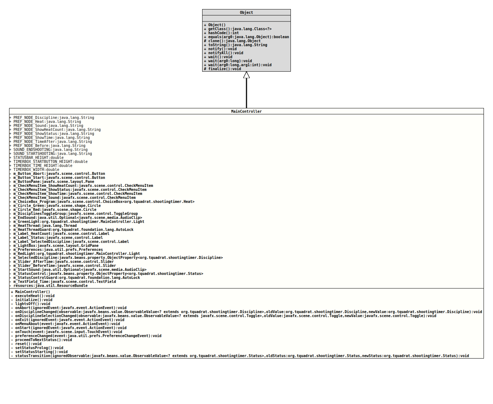

java.lang.Object
org.tquadrat.shootingtimer.MainController
@ClassVersion(sourceVersion="$Id: MainController.java 106 2022-01-19 15:53:24Z tquadrat $")
@API(status=STABLE,
since="0.1.0")
public class MainController
extends Object
The main controller for the Shooting Timer application.
- Author:
- Thomas Thrien (thomas.thrien@tquadrat.org)
- Version:
- $Id: MainController.java 106 2022-01-19 15:53:24Z tquadrat $
- Since:
- 0.1.0
- UML Diagram
-

UML Diagram for "org.tquadrat.shootingtimer.MainController"
{kind=link}
-
Nested Class Summary
Nested ClassesModifier and TypeClassDescriptionprivate static classThis class will manage the status for the lights. -
Field Summary
FieldsModifier and TypeFieldDescriptionprivate ButtonThe button that aborts a running heat.private ButtonThe button that starts a heat.private PaneThe pane that holds the buttons.private CheckMenuItemThe menu item for the heat count display.private CheckMenuItemThe menu item for the status display.private CheckMenuItemThe menu item for the time display.private CheckMenuItemThe menu item for the sound control.The choice box for the program of the selected discipline.private CircleThe circle for the green light.private CircleThe circle for the red light.private ToggleGroupThe toggle group for the selected discipline.The end sound.private MainController.LightThe green light.private ThreadThe thread that executes the current heat.private final AutoLockThe guard for the heat thread.private LabelThe label that displays the heat counter.private LabelThe label that shows the currently selected discipline.private LabelThe label that shows the current system status.private GridPaneThe pane that holds the lights.private final PreferencesThe preferences.private MainController.LightThe red light.private final ObjectProperty<Discipline>The currently selected discipline.private SliderThe slider for the time after shooting and before the reset.private SliderThe slider for the time before the prolog.The start sound.private final ObjectProperty<Status>The status control property.private final AutoLockThe guard for the status control.private TextFieldThe text field that is used to display the remaining time.static final StringThe name for the preference node that stores the time before the prolog: "/Time/Before".static final StringThe name for the preference node that stores the last used discipline: "/Discipline/Name".static final StringThe name for the preference node that stores the last used heat for the current discipline: "/Discipline/Heat".static final StringThe name for the preference node that stores the show heat count flag: "/Show/HeatCount".static final StringThe name for the preference node that stores the "show time" flag: "/Show/Status".static final StringThe name for the preference node that stores the "show time" flag: "/Show/Time".static final StringThe name for the preference node that stores the sound flag: "/Sound".static final StringThe name for the preference node that stores the time after shooting and before a reset: "/Time/After".private ResourceBundleThe injected resource bundle.static final StringThe file name for the end sound: "chinese-gong-daniel_simon.mp3".static final StringThe file name for the start sound: "foghorn-daniel_simon.mp3".static final doubleThe height for the fields in the status bar: 30.0.static final doubleThe height of the start button in the timer box: 100.0.static final doubleThe height of the time text field in the timer box: 100.0.static final doubleThe width for the fields in the timer box: 200.0. -
Constructor Summary
Constructors -
Method Summary
Modifier and TypeMethodDescriptionprivate final voidExecutes the current heat.private final voidInitialises the controller.private final voidSets the lights to the off state.private final voidonAbort(ActionEvent ignoredEvent) The button handler for theABORTbutton.private final voidonDisciplineChanged(ObservableValue<? extends Discipline> observable, Discipline oldValue, Discipline newValue) The change listener for the selected discipline.private final voidonDisciplineSelectionChanged(ObservableValue<? extends Toggle> observable, Toggle oldValue, Toggle newValue) The change listener for the disciplines in the menu.private final voidonExit(ActionEvent ignoredEvent) The handler method that initialises the termination of the application.private final voidonMenuAbout(ActionEvent event) Responds to the menu itemHelp|Aboutand shows the "About" dialog.private final voidonStart(ActionEvent ignoredEvent) The handler method for theSTARTbutton.private final voidonTouch(TouchEvent event) The handler method for touches to the grid pane.private final voidThe change listener for the preferences.private final voidProceeds to the next status.private final voidreset()Resets the system status.private final voidSets the system status toStatus.STATUS_PROLOG.private final voidSets the system status toStatus.STATUS_STARTING.private final voidstatusTransition(ObservableValue<? extends Status> ignoredObservable, Status oldStatus, Status newStatus) The change listener for the status control.
This method controls the current display.
-
Field Details
-
PREF_NODE_Discipline
The name for the preference node that stores the last used discipline: "/Discipline/Name".- See Also:
-
PREF_NODE_Heat
The name for the preference node that stores the last used heat for the current discipline: "/Discipline/Heat".- See Also:
-
PREF_NODE_Sound
The name for the preference node that stores the sound flag: "/Sound".- See Also:
-
PREF_NODE_ShowHeatCount
The name for the preference node that stores the show heat count flag: "/Show/HeatCount".- See Also:
-
PREF_NODE_ShowStatus
The name for the preference node that stores the "show time" flag: "/Show/Status".- See Also:
-
PREF_NODE_ShowTime
The name for the preference node that stores the "show time" flag: "/Show/Time".- See Also:
-
PREF_NODE_TimeAfter
The name for the preference node that stores the time after shooting and before a reset: "/Time/After".- See Also:
-
PREF_NODE_Before
The name for the preference node that stores the time before the prolog: "/Time/Before".- See Also:
-
SOUND_ENDSHOOTING
The file name for the end sound: "chinese-gong-daniel_simon.mp3".- See Also:
-
SOUND_STARTSHOOTING
The file name for the start sound: "foghorn-daniel_simon.mp3".- See Also:
-
STATUSBAR_HEIGHT
The height for the fields in the status bar: 30.0.- See Also:
-
TIMERBOX_STARTBUTTON_HEIGHT
The height of the start button in the timer box: 100.0.- See Also:
-
TIMERBOX_TIME_HEIGHT
The height of the time text field in the timer box: 100.0.- See Also:
-
TIMERBOX_WIDTH
The width for the fields in the timer box: 200.0.- See Also:
-
m_Button_Abort
The button that aborts a running heat. -
m_Button_Start
The button that starts a heat. -
m_ButtonPane
The pane that holds the buttons. -
m_CheckMenuItem_ShowHeatCount
The menu item for the heat count display. -
m_CheckMenuItem_ShowStatus
The menu item for the status display. -
m_CheckMenuItem_ShowTime
The menu item for the time display. -
m_CheckMenuItem_Sound
The menu item for the sound control. -
m_ChoiceBox_Program
The choice box for the program of the selected discipline. -
m_Circle_Green
The circle for the green light. -
m_Circle_Red
The circle for the red light. -
m_DisciplinesToggleGroup
The toggle group for the selected discipline. -
m_EndSound
The end sound. -
m_GreenLight
The green light. -
m_HeatThread
The thread that executes the current heat. -
m_HeatThreadGuard
The guard for the heat thread. -
m_Label_HeatCount
The label that displays the heat counter. -
m_Label_Status
The label that shows the current system status. -
m_Label_SelectedDiscipline
The label that shows the currently selected discipline. -
m_LightBox
The pane that holds the lights. -
m_Preferences
The preferences. -
m_RedLight
The red light. -
m_SelectedDiscipline
The currently selected discipline. -
m_Slider_AfterTime
The slider for the time after shooting and before the reset. -
m_Slider_BeforeTime
The slider for the time before the prolog. -
m_StartSound
The start sound. -
m_StatusControl
The status control property. -
m_StatusControlGuard
The guard for the status control. -
m_TextField_Time
The text field that is used to display the remaining time. -
resources
The injected resource bundle.- Note:
-
- The name of the field is dictated by JavaFX.
-
-
Constructor Details
-
MainController
public MainController()Creates a newMainControllerinstance.
-
-
Method Details
-
executeHeat
Executes the current heat. -
initialize
Initialises the controller. -
lightsOff
Sets the lights to the off state. -
onAbort
The button handler for theABORTbutton.- Parameters:
ignoredEvent- The action event.
-
onDisciplineChanged
private final void onDisciplineChanged(ObservableValue<? extends Discipline> observable, Discipline oldValue, Discipline newValue) The change listener for the selected discipline.- Parameters:
observable- The observed entity.oldValue- The old value.newValue- The new value.
-
onDisciplineSelectionChanged
private final void onDisciplineSelectionChanged(ObservableValue<? extends Toggle> observable, Toggle oldValue, Toggle newValue) The change listener for the disciplines in the menu.- Parameters:
observable- The observed entity.oldValue- The old value.newValue- The new value.
-
onExit
The handler method that initialises the termination of the application. It is assigned to theMENU_FILE_EXITmenu item.- Parameters:
ignoredEvent- The action event.
-
onMenuAbout
Responds to the menu itemHelp|Aboutand shows the "About" dialog.- Parameters:
event- The event that triggered this handler.
-
onStart
The handler method for theSTARTbutton.- Parameters:
ignoredEvent- The action event.
-
onTouch
The handler method for touches to the grid pane.- Parameters:
event- The touch event.
-
preferenceChanged
The change listener for the preferences.- Parameters:
event- The change event.
-
proceedToNextStatus
Proceeds to the next status. -
reset
Resets the system status. -
setStatusProlog
Sets the system status toStatus.STATUS_PROLOG. -
setStatusStarting
Sets the system status toStatus.STATUS_STARTING. -
statusTransition
private final void statusTransition(ObservableValue<? extends Status> ignoredObservable, Status oldStatus, Status newStatus) The change listener for the status control.
This method controls the current display.- Parameters:
ignoredObservable- The observed entity; ignored.oldStatus- The previous status.newStatus- The new status.
-